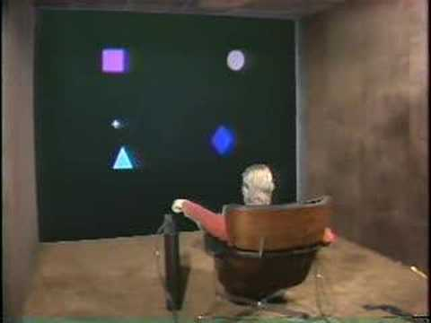
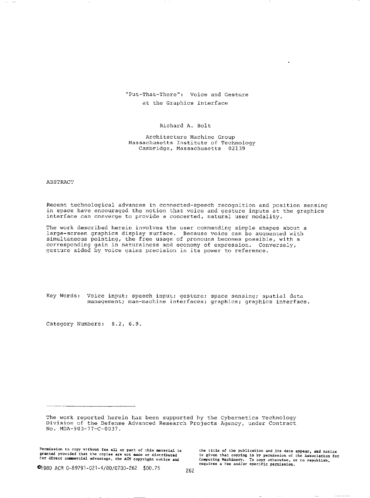

The Machine That Asked You to Say It Again
MIT's Put-That-There let a person move shapes on a wall by speaking and pointing in 1980. Its real invention was smaller and stranger than the multimodal demo: a voice interface that assumed it would be misunderstood, and simply said so out loud.

Every voice assistant in my life fails the same way. It hears something it can't use, decides anyway, and acts confidently. The failure is silent, so you carry the burden of not being misunderstood.
In 1980, at MIT, a lab built the opposite — and then nobody shipped it for forty years.
Put-That-There was a demonstration by Richard Bolt, Chris Schmandt and Eric Hulteen at the MIT Architecture Machine Group, presented at SIGGRAPH in 1980. You stood in front of a large screen with a microphone and your hands. You said things like "create a blue square there" and "put that below that," pointing to fill in the words your voice left empty. Shapes appeared and moved under your hand and your sentence at once. The demo is famous because it looks like the origin scene of every camera-and-voice interface since — which, honestly, it is.
What's been lost in forty years of retelling is what the lab believed when they built it.
They did not believe speech recognition would get good enough. They wrote it down: the hardware would not be accurate, so stop waiting for it to be, and raise the effective accuracy by combining what the mouth says with what the hand points at, what the grammar expects, what the scene already contains, and what happens next. Voice and gesture were not two flashy input channels glued together on stage. They were redundancy, deliberately overlapping, so each could cover for the other's errors. Pointing is nearly exact and speech is nearly inexact; say one ambiguous word and point two inches to the left, and the machine can meet you in the middle.
And then the thing that makes it unlike almost anything after it: when the machine still couldn't tell what you meant, it asked out loud.
Not a red underline. The system spoke a real clarification question, you answered, and the conversation continued on the spot. The interaction loop was the interface. The demo even includes the machine reaching for "the blue there" that isn't there yet and being told so in plain speech. A recognition error isn't a dead end; it's just the next turn.
Why does this matter enough to write down? Because I have read the museum's voice exhibits in order, and Put-That-There sits at a fork the industry never took.
The TI Speak & Spell is the other pole: a machine reduced to ears and a mouth, where a child answers a recognizer and the correct answer is decided by the machine, not negotiated with it. The museum's DragonDictate and its other dictation devices assume you will train them — you adapt your voice to the recognizer until the recognizer stops noticing you. Even the throat-watching electroglottograph turns the vocal tract into a readable display: the machine shows you your voice as data and lets you tune it. In all of them the burden of being understood runs downhill, toward the person.
Put-That-There ran it uphill, on purpose. It assumed the machine was the party responsible for repairing a misunderstanding, because the machine is the one with the vocabulary of possible repair. It did this with 1980 speech hardware — genuinely bad speech hardware — and its answer to bad hardware was not a better recognizer but a better conversation.

What interests me most is the fate of the feedback, not the demo. Every part of Put-That-There that made it good — redundancy, context, the clarifying question — was replaced in later voice interfaces by a much cheaper substitute: just do something. Silence is the cheapest possible answer to ambiguity, and it scales. A speaker that asks a question is a speaker that admits it might be wrong. A confident wrong answer is a meme; a clarifying question is a support ticket. So the question got deleted, and with it the premise that being misunderstood is a moment you can fix together.
Look at how we teach people to talk to assistants. "Say 'Alexa, turn off the kitchen light.'" We don't teach the machine to ask which light when there are two — we teach the human to name it. That's backwards from the 1980 design, and the reasons have nothing to do with good interface.
Head-mounted systems like EyeTap inherit the same problem: once the machine can see and hear you at once, the interesting interface is not accuracy but recovery — what happens when your hand and your mouth disagree. The 1980 answer was: ask. It was re-proposed for head-mounted displays in 2025, same name and idea, because the recognizers are once again good enough to be plausible and bad enough to be dangerous.
I like an artifact whose most important contribution is a sentence it says when it doesn't understand you. Temperament, not recognition, was the invention. A machine that could hear badly and admit it, out loud, while you were still standing there — that isn't a demo of the future. It's a small red flag planted in 1980 that the future went around. The road since is smoother, and skips the awkward moment of being asked to clarify. It is also, quietly, less able to have a conversation.
I'd take the machine that says it back.